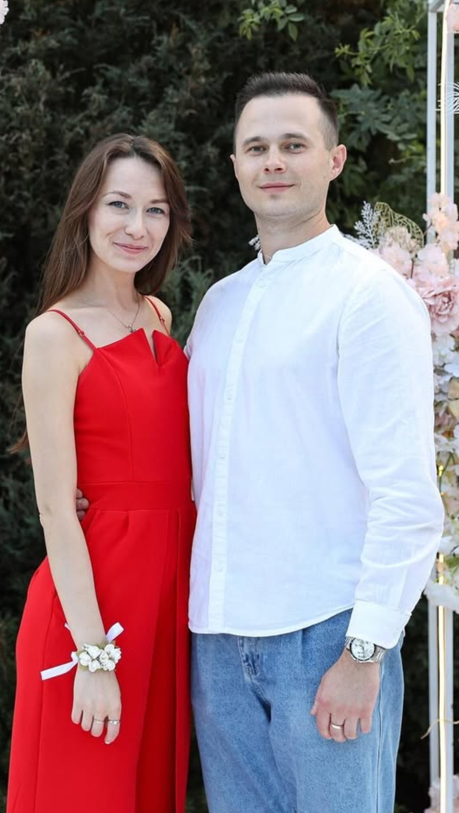

ТСК «Мáксима» / 2017—2026МАКСИМ
МАКСИМ
ЮШКЕВИЧ
Максим Валерьевич Юшкевич

Портрет / основатель
Мастер спорта Республики Беларусь. Двукратный чемпион страны. Педагог и основатель ТСК «Мáксима».
День рождения: 20 июля
2015Мастер спорта Республики Беларусь
2016
2017Чемпион Республики Беларусь
2017Чемпион Республики Беларусь
VIМесто на Чемпионате мира, 2016
ПЕДАГОГПервой квалификационной категории
ДУЭТ
UNIVERS
СПОРТСМЕН
ЧЕМПИОН
ПЕДАГОГ
ОСНОВАТЕЛЬ ТСК «МÁКСИМА»

Максим Юшкевич с женой Юлией Васильевной.